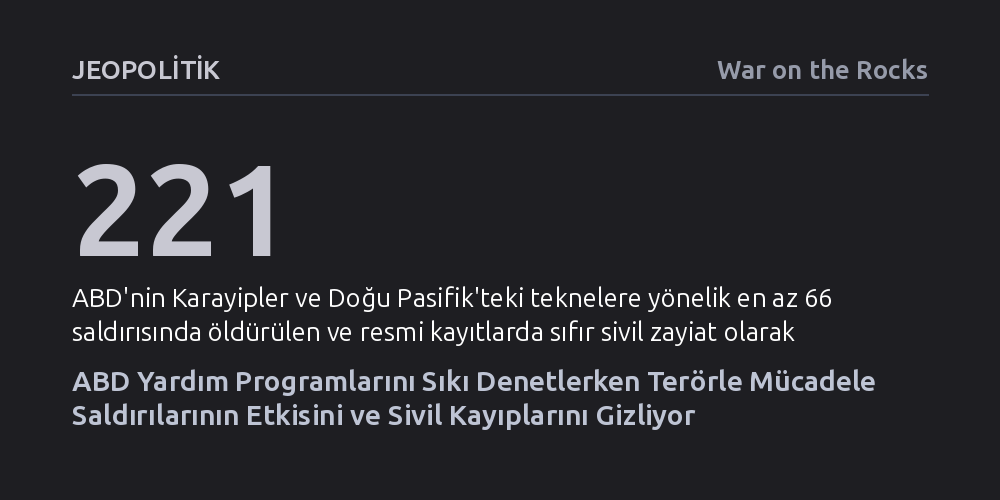

JEOPOLITIK · War on the Rocks · 2026-09-11
ABD Dışişleri Bakanlığı terörle mücadele hibelerini sıkı denetim ve somut verilere bağlarken, Pentagon son 18 ayda askeri saldırılardaki sivil kayıpları ve etki değerlendirmelerini kamuoyundan gizlemeye başladı. Bu durum, yüz milyonlarca dolarlık ölümcül operasyonların hukuki ve stratejik geçerliliğini denetimsiz bırakıyor.
Devletlerin sivil yardım projelerinden kuruşu kuruşuna hesap sorarken, insan hayatına doğrudan son veren yüz milyonlarca dolarlık askeri operasyonları sıfır denetim ve şeffaflıkla yürütebildiğini gösteriyor.

ABD Dışişleri Bakanlığı Terörle Mücadele Bürosu'nda sekiz yıl boyunca Doğu Afrika projelerini denetleyen bir uzmanın tanıklığı, Amerikan yönetim aygıtındaki çarpıcı çifte standardı ortaya koyuyor. Yıllık yaklaşık 80 milyon dolarlık yardım bütçesi yönetilirken tek bir dolar dahi önceden belirlenmiş performans göstergeleri ve temel ölçütler olmadan harcanamıyordu. Projeler hedeflerini tutturamadığında ya da raporlar geciktiğinde fonlar derhal donduruluyor, bağımsız denetçiler sahada uygulayıcıların beyanlarını tek tek teyit ediyordu. Kongre ve Teftiş Kurulu’nun kurduğu bu mekanizma sayesinde hangi girişimin işe yarayıp hangisinin başarısız olduğu şeffaf biçimde kayda geçiriliyordu.
Bu sıkı takip somut neticeler de verdi. Mogadişu'da 2017'deki büyük kamyon saldırısının ardından güçlendirilen kontrol noktaları ve kurulan mobil denetim sistemleri sayesinde benzer saldırıların şehir merkezine ulaşması engellendi; 2020-2024 yılları arasında 1.200'den fazla militanın örgütten ayrılması sağlandı. Bütün bu programlar mutlak bir zafer vadedemese de neyin işe yarayıp neyin yaramadığını gösteren açık bir veri havuzu oluşturuldu. Çünkü kamuoyuna veri sunmayan bir askeri ya da sivil seferberlik sadece yetersiz sonuçlar üretmekle kalmaz; ortada değerlendirilebilecek hiçbir veri bırakmadığı için başarısını veya meşruiyetini kanıtlamayı da imkânsız kılar.
Buna karşılık, aynı politikanın doğrudan can alan askeri kanadında işler tam tersi bir istikamete girdi. İster insansız hava araçlarıyla yapılan hava harekâtları ister denizde yürütülen operasyonlar olsun, bir saldırının hukuka uygun ve etkili olup olmadığını anlamak, kimi vurduğunu ve kaç kişinin ölümüne ya da yaralanmasına yol açtığını bilmeyi gerektirir. Ancak son bir buçuk yıldır iki ayrı muharip komutanlık bünyesinde ABD yönetimi bu temel bilgileri üretmeyi fiilen durdurdu. Amerikan devleti, küçük bir yardım hibesi alan sivil kuruluşa uyguladığı denetim ve hesap verebilirlik standartlarının binde birini, doğrudan insan hayatına son veren askeri operasyonlarından talep etmiyor.
Pentagon'un bilgi akışını kesmesi aniden gerçekleşmedi; aşamalı bir karartma taktiğiyle kamuoyunun gözünden kaçırıldı. ABD Afrika Komutanlığı (AFRICOM), 2024 başında Somali'de düzenlediği saldırılarda öldürülen militan sayısını ve sivil kayıp olmadığını açıkça bültenlerine yazıyordu. 2025 yılına gelindiğinde bu ayrıntılar budandı ve bültenler sadece 'düşman unsurların öldürüldüğü' şeklinde belirsiz ifadelere indirgendi. 2026 Ağustos'undaki açıklamalarda ise yalnızca operasyonun tarihi, hedef alınan örgüt ve en yakın yerleşim yerine olan mesafe belirtilir oldu; kaç kişinin öldüğü ya da yaralandığı bilgisi tamamen çıkarıldı.
Daha da vahimi, komutanlığın kendi başlattığı kurumsal raporlama mekanizmalarının dahi rafa kaldırılmasıydı. AFRICOM, Nisan 2020'den bu yana üç ayda bir düzenli olarak sivil zarar değerlendirmeleri yayımlıyordu. Ancak komutanlık tarihinin en yoğun ve kesintisiz saldırı seferberliğinin yürütüldüğü Temmuz 2025 ile Haziran 2026 arasındaki dört çeyrek boyunca resmi web sitesinde tek bir değerlendirme bile paylaşılmadı. Sahada en fazla bombanın atıldığı dönemde, kamuoyuna en az bilgi verildi.
Yasal olarak Kongre'ye sunulması zorunlu olan yıllık sivil kayıp raporlarında da benzer bir savsaklama göze çarpıyor. Savunma Yetkilendirme Yasası'nın 1057. maddesi uyarınca her yıl en geç 1 Mayıs'a kadar Kongre'ye teslim edilmesi ve kamuoyuna açıklanması gereken raporlar son üç yıldır sürekli gecikiyor. 2025 yılını kapsayan rapor, şubat ayında tamamlanmış olmasına rağmen aylarca bekletilerek ancak Ağustos 2026'da teslim edildi. Üstelik kanunun açık emrine rağmen rapor kamuoyuyla paylaşılmadı; sivil toplum ve basın organları bu belgelere ancak sızıntılar ve özel çabalar sayesinde ulaşabildi. Belgeye ulaşıldığında tablonun vahameti anlaşıldı: 2024 yılında tüm dünyada sadece iki sivilin öldüğü kayda geçmişken, 2025 raporunda tamamı Yemen'de olmak üzere 153 sivilin öldüğü ve 243 sivilin yaralandığı belgelenmişti.
Şeffaflıktan uzaklaşmanın en çarpıcı örneği Karayipler ve Doğu Pasifik'te yürütülen deniz harekâtlarında yaşanıyor. Washington yönetimi 2025 yılında uyuşturucu kartellerini 'yabancı terör örgütü' ilan etti. Bu tanımlama, orduya gemileri ve küçük tekneleri vurup batırma yetkisi tanıdı. Hükümet uyuşturucuyla mücadeleyi terörle mücadele kılıfına sokarak öldürme yetkisi devşirirken, bu yetkinin getirdiği yasal raporlama ve sivil kayıp yükümlülüklerini ise görmezden geldi.
En az 66 saldırıda 221'den fazla insanın öldürüldüğü bu deniz operasyonlarında, resmi raporlara göre sivil kayıp sayısı sıfır. Ancak ABD Temsilciler Meclisi Silahlı Hizmetler Komisyonu üyesi Sara Jacobs'a verilen brifing, bu sıfır rakamının sahadaki bir gerçeği değil, masa başında üretilmiş bir kategorizasyonu yansıttığını ortaya koydu. Savunma yetkilileri, teknelerdeki insanları vurmadan önce kimliklerini kesin olarak tespit etmelerine gerek olmadığını, sadece hedef alınan bir kartelle irtibat göstermenin saldırı için yeterli sayıldığını itiraf etti. Yani gemideki herkes, sırf o teknede bulunduğu için önceden muharip ilan ediliyor ve otomatikman sivil kayıp sayılmıyor.
Bu yaklaşımın ölümcül bedeli 2 Eylül'de düzenlenen bir saldırıda somutlaştı. Vurulan teknedeki 11 kişi, Venezuela'nın insan kaçakçılığı merkezi olarak bilinen Paria Yarımadası'ndaki kıyı kasabalarındandı. Bölgede teknelerin uyuşturucu, silah ve kaçırılan insanları bir arada taşıdığı bilinmesine rağmen teknedekiler doğrudan hedef alındı. Hatta Genelkurmay'dan Tuğamiral Brian Bennett, brifingde ölenler arasında insan ticareti mağdurlarının bulunup bulunamayacağı sorusuna açıkça onların da kurbanlar arasında yer alabileceğini belirterek yanıt verdi. İnsan kaçakçılığı mağduru bir sivilin terör örgütü mensubu sayılamayacağı gerçeği, hükümetin önceden kurguladığı etiketlerle perdeleniyor.
Operasyonların maliyeti ve stratejik etkinliği söz konusu olduğunda da karanlık tablo derinleşiyor. Dışişleri Bakanlığı'nın Doğu Afrika'daki tüm sivil yardım portföyü yılda yaklaşık 80 milyon dolarken, Güney Komutanlığı 'Southern Spear' adı verilen operasyona tek bir çeyrekte 528 milyon dolar, yedi aylık bir dönemde ise 647 milyon dolar harcadı. Ancak komutanlık, görevin tam amacını gizli tuttuğu gibi hedeflenen örgütleri, düzenlenen saldırı sayısını ve operasyonun işe yarayıp yaramadığını ölçecek kriterleri dahi açıklamayı reddetti. Öyle ki Başmüfettişlik, operasyondaki saldırı sayısını belirleyebilmek için ordunun kayıtlarına değil, New York Times ve ABC News haberlerine başvurmak zorunda kaldı.
Üstelik sızan Amerikan Uyuşturucuyla Mücadele Dairesi (DEA) analizleri, harcanan yüz milyonlarca dolara rağmen ABD'ye giren kokain arzında veya fiyatında hiçbir değişiklik olmadığını belgeledi. Güney Komutanlığı komutanı dahi kartellerin yeni rotalara kaydığını ve hava taşımacılığı ile konteynerlere yönelerek saldırılara hızla uyum sağladığını itiraf etti. Milyonlarca dolarlık mühimmat operasyonları, sahada somut hiçbir stratejik başarı üretemedi.
Pentagon yetkilileri bu sessizliği sıklıkla 'operasyonel güvenlik' ve istihbarat kaynaklarını koruma argümanıyla savunuyor. Ancak bu itiraz inandırıcı değil. Geçmiş yıllarda yayımlanan 22 farklı çeyrek dönemlik raporda, hiçbir birlik veya askeri araç ifşa edilmeden can kaybı sayıları şeffafça paylaşılmış ve tek bir güvenlik zaafı dahi yaşanmamıştı. Hatta Nijerya ordusu, 2026 yılı Mayıs ayında ABD ile ortak yürüttüğü bir operasyonda Washington tek bir sayı dahi vermekten kaçınırken, sahada 175 IŞİD militanının etkisiz hale getirildiğini ve öldürülen üç komutanın isimlerini kamuoyuna duyurabilmişti. Aynı propaganda riski ve düşmanla yüz yüze olan Nijerya şeffaf davranabilirken, Pentagon'un sessizliğe bürünmesi güvenlik kaygısıyla değil, denetimden kaçma refleksiyle açıklanabilir.
Terörle mücadelede ölçülemeyen ve kamuoyuna hesap vermeyen hiçbir askeri harekâtın uzun vadeli başarı şansı yoktur. Hava saldırılarında sivillerin öldürülmesi veya ayrım gözetilmemesi, hedeflenen terör örgütleriyle hiçbir bağı olmayan masum bireyleri radikalleştirerek tam tersi sonuçlar üretmektedir. Üstelik hesap verebilirlikten yoksun bir yönetim anlayışı, hükümetin hem kendi halkı hem de müttefikleri nezdindeki inandırıcılığını ve meşruiyetini aşındırır.
Bu tıkanıklığı aşmanın anahtarı Kongre'nin elindedir. Yasalar gereğince yıllık raporların zamanında teslim edilmesi ve kamuoyuna açık versiyonlarının eşzamanlı basılması keyfi bir tercih değil, yasal bir zorunluluktur. Kongre, sivil yardım projelerinde yaptığı gibi, Savunma Bakanlığı'na tahsis ettiği bütçeleri de şeffaf ve eksiksiz raporlama şartına bağlamalıdır. Kendi etkinliğini ve sivil kayıplarını kanıtlayamayan yardım programlarının fonları kesiliyorsa, Amerikan vergi mükelleflerinin parasını harcayan ve insan hayatına son veren askeri operasyonlar da aynı kurala tabi tutulmalıdır.